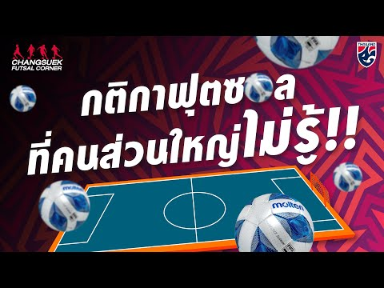

กติกาพื้นฐานของฟุตซอล
ฟุตซอลมีกติกาที่แตกต่างจากฟุตบอลสนามใหญ่หลายข้อ โดยเฉพาะในเรื่องจำนวนผู้เล่น ขนาดสนาม และเวลาการแข่งขัน ซึ่งช่วยทำให้เกมเร็วและเน้นทักษะมากขึ้น
จำนวนผู้เล่น
แต่ละทีมจะมีผู้เล่น 5 คน คือ ผู้รักษาประตู 1 คน และผู้เล่นสนาม 4 คน โดยสามารถเปลี่ยนตัวได้ไม่จำกัดจำนวนและเปลี่ยนตัวได้ทันทีระหว่างเกม(แบบ“Rolling Substitution”)
ขนาดสนาม
สนามฟุตซอลมีขนาดเล็กกว่าฟุตบอลสนามใหญ่ มีความยาวประมาณ 25-42 เมตร และกว้างประมาณ 15-25 เมตร มีเส้นเขตโทษและเส้นยิงลูกโทษชัดเจน
เวลาแข่งขัน
การแข่งขันแบ่งออกเป็น 2 ครึ่ง ครึ่งละ 20 นาที นาฬิกาจะหยุดเมื่อเกมหยุดเล่น (Stop clock) เวลาพักครึ่งประมาณ 10-15 นาที
การล้ำหน้า
ฟุตซอลไม่มีการล้ำหน้าเหมือนฟุตบอลสนามใหญ่ ทำให้การเล่นในพื้นที่แคบเป็นไปได้อย่างอิสระมากขึ้น
การฟาวล์และการลงโทษ
ทีมที่ฟาวล์ครบ 5 ครั้งในครึ่งแรกหรือครึ่งหลังจะถูกลงโทษด้วยการเตะลูกโทษโดยตรง และฟาวล์ทุกครั้งจะถูกนับรวมตลอดครึ่งนั้น
ลูกเตะมุมและลูกเตะจากประตู
เมื่อลูกบอลออกหลังเส้นประตู ฝ่ายตรงข้ามจะได้ลูกเตะจากประตู หรือเตะมุมตามกติกาที่กำหนด
